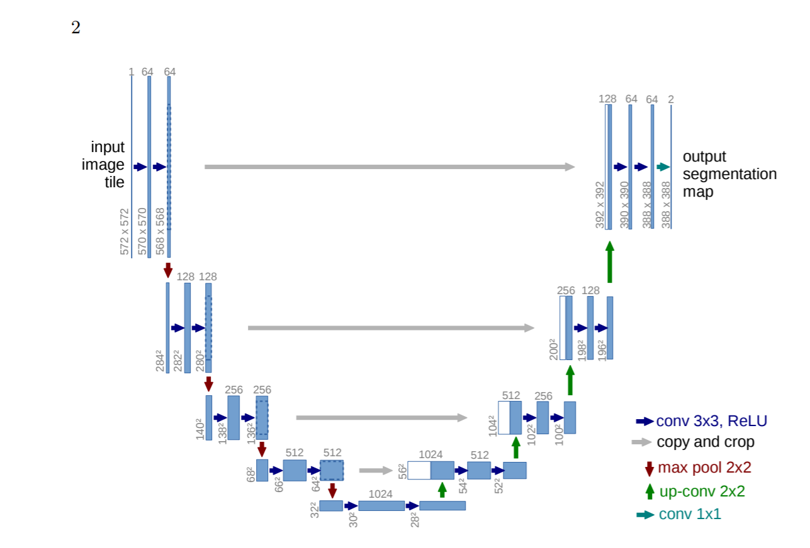

简介
在医疗生物的图像处理中，我们希望输出包括定位，也就是对于每一个像素进行分类。此外，卷积神经网络需要使用几千张图像进行训练，这常常超过了医疗生物能获得的数量范围。为了解决这些问题，Cireans et al训练了一个基于滑动窗口的网络用来预测每一个像素的分类（把每一个像素周围一定范围内的像素用作输入）。这个网络可以实现定位，而且训练数据也远远大于训练用的图片（每个图片都被分为很多小patch）。
但是这个策略有两个不好的地方：
- 网络的运行速度很慢，因为必须分别对每个patch进行处理，而且因为patch之间会互相覆盖，所以有很多冗余的信息。
- 定位的精度和背景的使用率两者不可兼得，更大的patch使用了更多的背景信息，但是也需要更多的池化层，导致了定位精度的下降。而小patch则只能看到很少一部分的背景信息。
根据最近的研究，可以同时计算不同层的不同特征图来到达同时提升定位精度和背景利用率的目标。
在Unet这篇论文中，网络是基于Fully convolutional network（FCN，即全卷积网络）

在[9]中的主要想法是扩增一个多个层的contracting netwrok，把其中的池化层换成上采样层。这样就可以增加输出的分辨率。为了实现定位，高分辨的特征图通过contracting path与上采样后的输出绑定，这样后面的连续卷积层就可以学习如何使用这些信息去组合成更准确的输出。
而在Unet架构中一个重要的改变就是上采样部分的特征图的通道数很大，这样网络就可以把背景信息传播到更高分辨率的层中。如此一来，网络的扩展部分和缩小部分就是一个对称的样子，形成了一个U形网络。网络没有全连接层，并且在卷积的时候只只用valid，
Unet使用了叫overlap-tile的策略来适应任意大的图片，如下图。将整个图分为几个小块（黄色），预测黄色区域内的像素的时候把蓝色区域作为输入。当黄色区域在边界上导致蓝色区域内有丢失的像素时，使用镜像填补的方式补充像素。

此外，文中通过将弹性变形应用于可用的训练图像来使用数据增强。
网络结构
左边为网络的缩小部分，就是典型的CNN，采用3X3的卷积核+ReLU+2X2的池化层(stride=2)下采样，每次下采样会产生两倍于现在的通道数。
右边为网络的扩展部分，基本和左边是对称的，采用2X2的反卷积，并且减少一半的通道数。残差结构用来弥补在卷积中损视的边界信息。而最后的1x1的卷积层用来把每个像素的通道数映射到需要分类的数目上。
此外，为了实现无缝分割，注意选择输入块的大小，使得所有输入2X2池化操作的特征图的长宽都是偶数。
训练
采用随机梯度下降+动量(0.99)。损失函数为对每个像素的softmax+交叉熵损失函数。
此外，在训练过程中，论文提前计算gt的权重图来弥补不同像素的不同出现频率，以此来迫使网络学习相邻细胞间的边界，如下图：

权重图的计算如下:
其中$w_{c}$是用来平衡每个类的频率的权重图，$d_{1}$是最近一个细胞到边界的距离，$d_{2}$是第二近的细胞到边界的距离。实验中，$w_{0}$设置为10，$\sigma \approx 5$个像素。
初始化权重，目的是让网络中每个特征图都有差不多单位方差(？？)，实验中使用高斯分布(std = $\sqrt{2 / N}$,N是输入一个神经元的nodes数量，比如前一个层网络使用3X3卷积和64个通道，则N = 9X64=576)